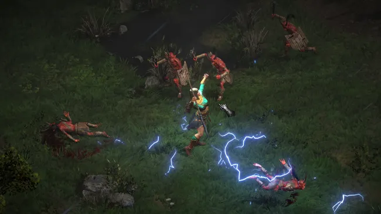
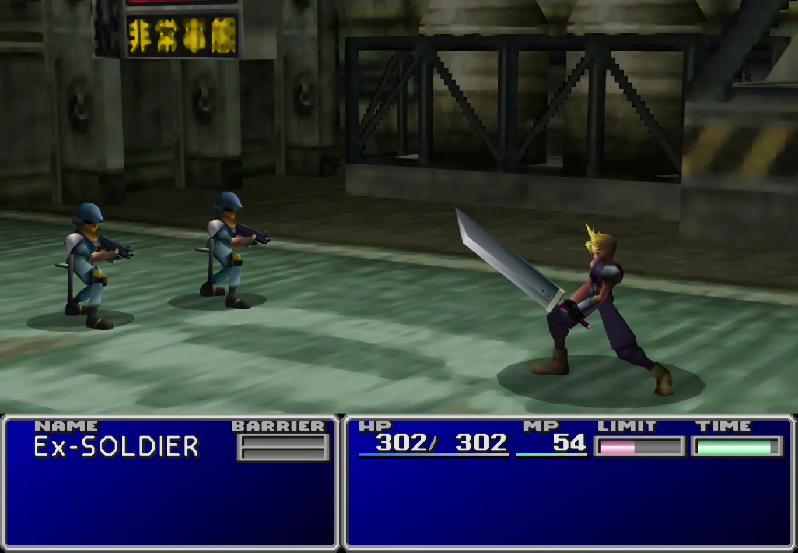
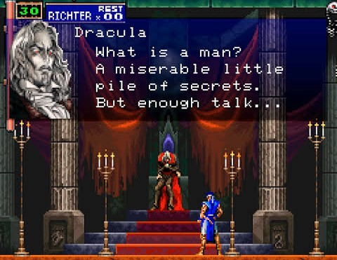
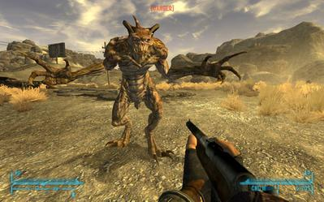
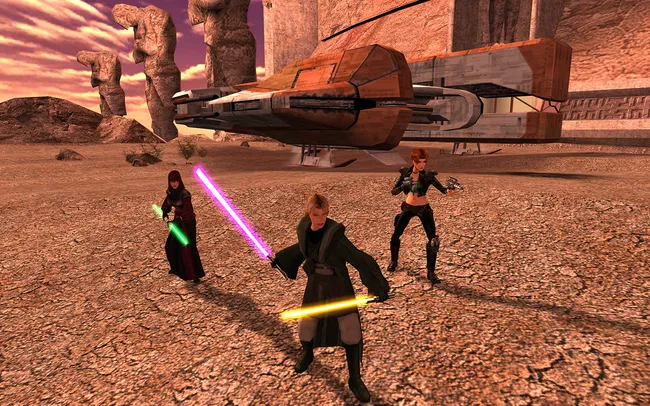
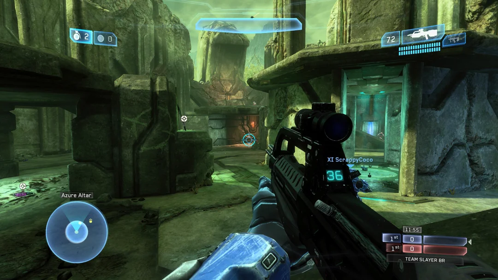
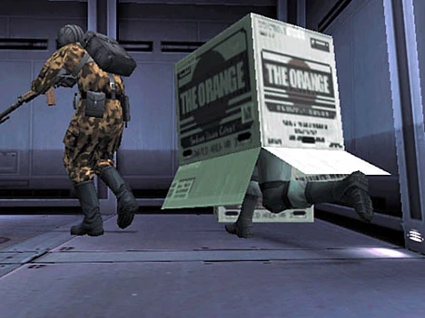
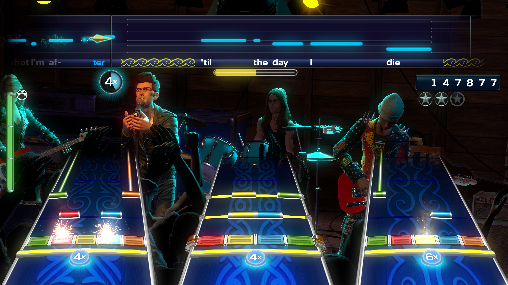
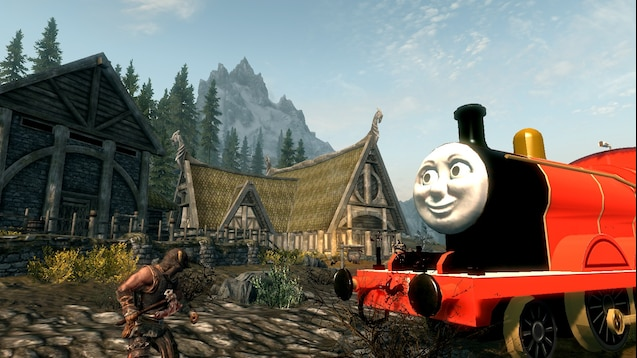
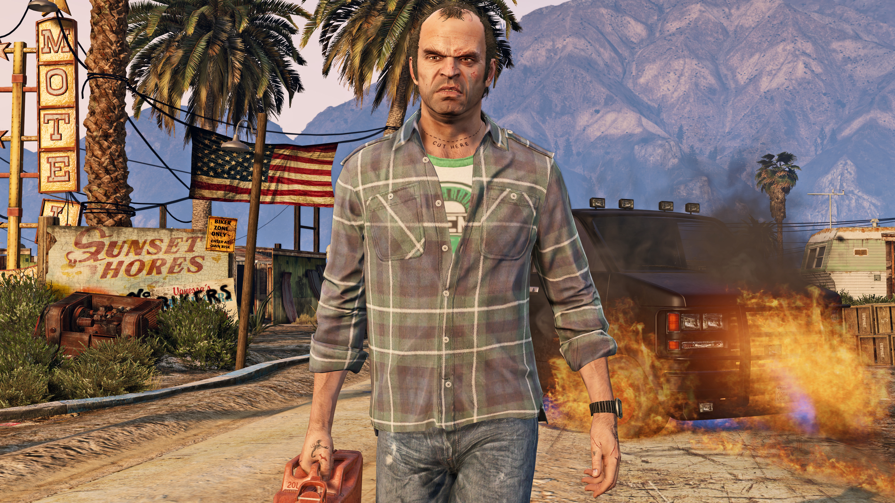

Chris's Top 10 Video Games

1. Diablo 2/Resurrected
The original hack and slash looter that is still played by legions today thanks to a Remastered version that is still updating. Some people play for years and still don't get the rarest items. People still return to it after Diablo 3 and 4 because that's how fun it is (or addictive, depending on your perspective).

2. Final Fantasy 7
While they recently started remaking this game in a version so massive it needed 3 games to go through the same story, the original is still king. The story and gameplay announced the arrival of the Playstation as a new power in gaming to rival Nintendo.

3. Castlevania: Symphony of the Night
So good it has a genre named after it along with Medtroid (Metriodvania), This took the sidescroller to new heights adding leveling, items, weapons, and spells to your arsenal. The game also popularized multiple endings, with the standard ending being the worst. You had to figure it out, open a whole new map, and get special hidden items to unlock better endings.

4. Fallout: New Vegas
Fallout 3 move the series from top down to first person, but New Vegas changed the game significantly with new crafting, accurate ADS targeting, and multiple factions to try to win the game with. Be good, neutral, or evil - choices matter.

5. Star Wars: Knights of the Old Republic
Another game where choices matter (well mostly, you can choose evil after the twist and it's like nothing before mattered), this time set in the Star Wars universe. Set before any of the films and shows, KOTOR lets players be whatever they want in a story that has one of the best twists ever created. Even the last minute evil choice is still a fun tidbit after you've already played the game a couple times

6. Halo 2
This is purely a personal choice for which game from this series to include since the first Halo is another game changer. Halo 2 still did a lot, becoming the first console online shooter with mass appeal. No more did i have to haul my XBOX to a friends house for Lan Parties, I could play with friends in the comfort of my own (well my parents, i was 19 when it came out). The addition of different game modes and custom settings meant everyone cold play the game they wanted to play along with a group of like minded players.

7. Metal Gear Solid
The man, the myth, the box! Another statement for the Playstation, MGS combined stealth, story, and cinematic cutscenes to create a new type of game. The story was so good it spawned multiple sequels and prequels, but the original is still the best. The game also had a unique boss fight that required you to use the controller in a way that was not intended.

8. Rock Band 4
Guitar Hero started the genre, but Rock Band turned it into a party game everyone wanted to play. It didn't matter if you were good or bad, with the added vocals and drums and no fail mode, everyone had a fun time fumbling through their favorite songs. And if you could play and sing, it was a different kind of fun. With hundreds of songs in every genre there was always something someone knew and could take the reigns on. you to use the controller in a way that was not intended.

9. Skyrim
It has taken 15 years for another Elder Scrolls game to be released since Skyrim. It has been remastered for 3 generations of systems and is still being modded with gameplay improvements, cheats, and other silliness because players want to keep playing but add something new to each play through (even though they will be a bow wielding magic user for the 50th time).

10. Grand Theft Auto V
Will this be replaced with GTA 6 in a few years? Probably, but for now GTA V is the best of the series. Rockstar takes years to refine their story and gameplay making each iteration better than the last, but no one will fault you if you still choose IV or San Andreas over this one. The triple protagonist package of Franklin, Trevor, and Michael offer different playstyles with each having their game breaking powers to use at separate points in the game. It doesn't matter which one you use for side missions, because you can beat them in different ways with each character. The voice acting is top notch, with Trevor being a personal favorite (although not everyone feels this way as Rockstar purposefully made Trevor a reflection of players of the previous games who did all of the things they weren't supposed to do in the game).